Two artefacts, one animation. The desktop takes the Lottie through velato; the web takes
this SVG, because the site ships no motion library and a Lottie runtime is ~75 KB
gzipped for two brand animations (ADR 0012). svg_form.py does not re-choreograph
anything — it reads the built Lottie, so a change to the schedule cannot land in one file and
miss the other. This page is where you check that claim by eye.
The filmstrip below is the real test. Each pair is the same frame: the SVG on top, paused through the Web Animations API, and the Lottie beneath it, seeked to the same frame. They should be indistinguishable apart from the dash ends, which sit up to about 1.6 units apart because a dash length is the difference of two eased ramps and CSS has no way to say that — so it is sampled once per frame.
The first two are the shipping form: an <img>, which is how a page should take
it — no script, no runtime, and the file's <style> stays inside it.

form.svg as <img>. Light.
form_dark.svg as <img>. Dark.form.json through lottie-web, for comparison.